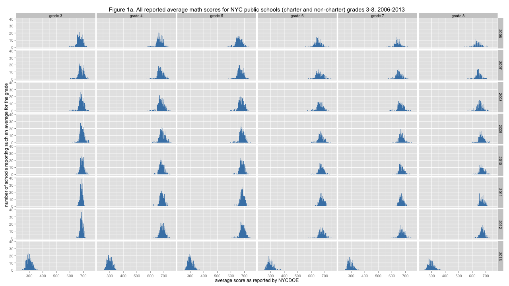
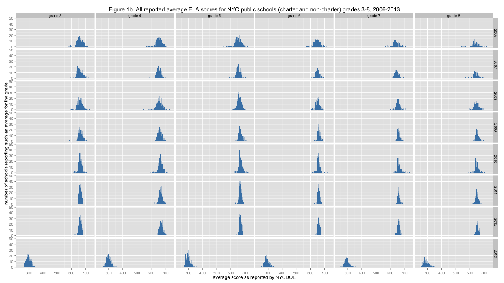

NYC standardized test results: Putting the data together and looking at it
Wednesday November 13, 2013
[caption id="attachment_504" align="aligncenter" width="525"] Figure 1a. All reported average math scores for NYC public schools (charter and non-charter) grades 3-8, 2006-2013[/caption]
The New York City Department of Education makes available on their web site average standardized test results down to the school grade level, and even broken out further by a variety of demographics, if you know where to look. What can we learn about education by looking at this data?
The NYCDOE splits these results into a number of files. One division is charter vs. non-charter schools. It isn't clear why the results for the two types of public schools should be disseminated in separate files, but they are. The other division is between results for the years 2006 to 2012 and the results for 2013. (Tests are administered in spring, and that calendar year is used to identify results.) This split seems to be done to discourage comparison of the 2006-2012 results and 2013 results. Notes in the Excel files say that "[u]nlike prior years, proficiency is now based on the Common Core – a more demanding set of knowledge and skills necessary for 21st century college and careers." Comparisons of percent proficient are certainly affected, but percent proficient is based on more or less arbitrary cut scores, and was always a silly thing to look at. We may still ask, how has the alignment of tests to the Common Core affected average school results?
Getting all the data together requires downloading six Excel files and putting together eight tables. I've done this, and the result is now available on github. I'm only looking at the average scores reported for whole grades, leaving for the moment the possibly interesting breakdowns by demographics like sex and race. I'm also ignoring the suppressed values that occur when a grade has five or fewer tested students. For whole grades, this shouldn't be too big a problem. (One exercise: recover suppressed average scores where possible by using class average and large component averages.) The data looks like this:
{kind=link}
"dbn" "grade" "year" "subject" "n" "score" "01M015" "3" 2006 "ELA" 37 651 "01M015" "3" 2007 "ELA" 33 635 "01M015" "3" 2008 "ELA" 39 646 "01M015" "3" 2009 "ELA" 33 644
"DBN" (District Burough Number) is a unique identifier for each school. The original files contain school names as well.
At this point we can check out the distribution of average scores in the two tests we have results for: ELA (English Language Arts) and Mathematics. Mathematics is up above because people like pictures. Click on either image to see the full-size version:
[caption id="attachment_505" align="aligncenter" width="525"] Figure 1b. All reported average ELA scores for NYC public schools (charter and non-charter) grades 3-8, 2006-2013[/caption]
{kind=link}
A number of things can be seen here. Most obvious is the smack that scores took in 2013 - after creeping toward 700 from 2006 to 2012, the "new tests" in 2013 have pulled school grade averages down near 300. Another thing that's evident on slightly closer inspection is that there is a trail of extremely low scoring school grades off to the left sides for many of these distributions from 2006 to 2012, but in 2013 these low average score outliers are nowhere to be found. The variance of the average scores is certainly not the same everywhere, with some distributions spiking quite high and others more spread out. Normalizing these distributions will be the next step of analysis.
Some distributions appear to be skewed a bit, with the mass of the distribution off to the left of center a bit, with scores spreading out more toward the right. This is particularly apparent (together with the low-scoring outliers noted earlier) for the eighth-grade math tests in 2009. This might be taken as evidence for higher-performing students moving (by whatever mechanism) into particular higher-scoring schools, leading to relatively larger numbers of similarly low-performing schools.
Since the vertical axes are the same within each figure, you can try to judge total area of each distribution and observe that there are fewer average scores reported for the higher grades, with the biggest change apparent between grade 5 and grade 6. This makes sense to those familiar with the American school system, where many elementary schools end with grade five and students often then transition to a larger middle school that starts with grade six. Hence, fewer middle schools than grade schools. The data has the number of students contributing to each average score, which hasn't been analyzed at all yet. It could be interesting to see how the count of students varies over grades and years. For example, it might be possible to determine, to some extent, whether students tend to enter or exit the public or private school systems more between particular grades (or not).
[table of contents for this series]
This post was originally hosted elsewhere.